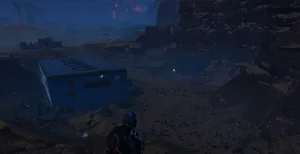
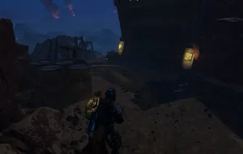
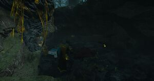

碉堡
the Bunker, also known as Vault, Friendship Door, or Double Door, is a 小型 human 建筑, which can be found during missions. While it has 物资 all around and within it, it's also a 特殊 Loot 容器, having space for 3 特殊 Loot units. To gain access to the inside, either two 绝地潜兵 must coordinate to push a button on either 侧面 simultaneously or use the LIFT-182 Warp Pack to warp and bypass the door as well as the 要求 of another 绝地潜兵 to push the other button.
次要特殊地点
Unlike other variations of other 兴趣点, this one will always have the 特殊 Loot in all its variations.
| 变体 | 图像 |
|---|---|
| 地下 1 | |
| 地下 2 |  |
| Above ground 1 |  |
| 地下 1 破损 |  |
备注
- Aiming at the 方向 of the 特殊 loot shelves on the far-right 侧面 and pinging at the door marks all other 内容 aside for SG-88 中折式霰弹枪 and the loot which do not 要求 撤离; it is not possible to ping-mark these to begin with. Thus it possible to accurately know if a Bunker contains 稀有样本, 支援武器, ammunition, or random assortment of instantly cashed-in loot (these being 超级货币,
 奖章，以及 申购单.)
奖章，以及 申购单.) - The Bunker 建筑 itself 偶尔 can be either completely missing or replaced by enemy-阵营 structures while playing on
 超级绝地潜兵难度 and higher 难度 missions. In place there might be 常见样本 or other supply-items.
超级绝地潜兵难度 and higher 难度 missions. In place there might be 常见样本 or other supply-items. - Without a Warp Pack or a buddy to bypass the door, another viable option is to back an 外骨骼机甲 into the door and get out. Once the loot is collected, enter the 外骨骼机甲 again to leave.
变更历史
补丁
描述
1.003.101
2025-06-10
修复
- Bunker POIs are now properly marked on the 小地图 and generate 特殊 loot on Metropolis 生物群系 maps